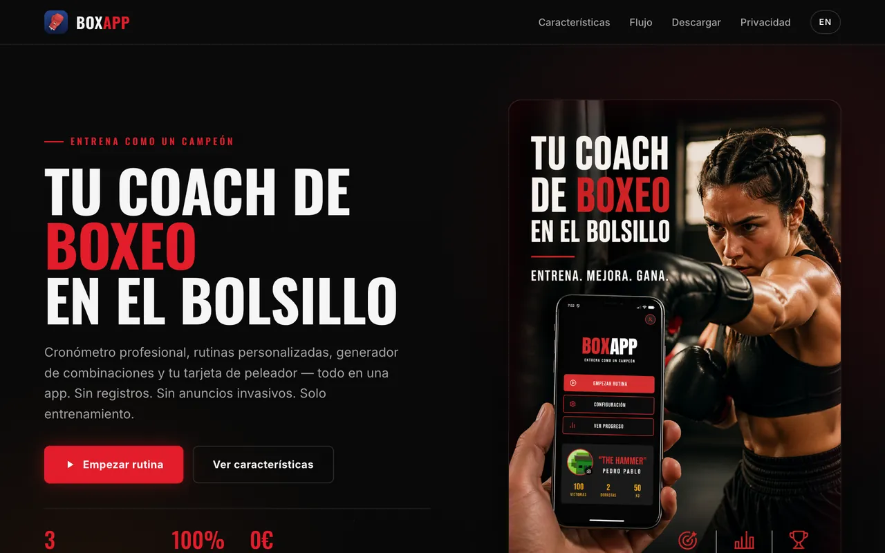
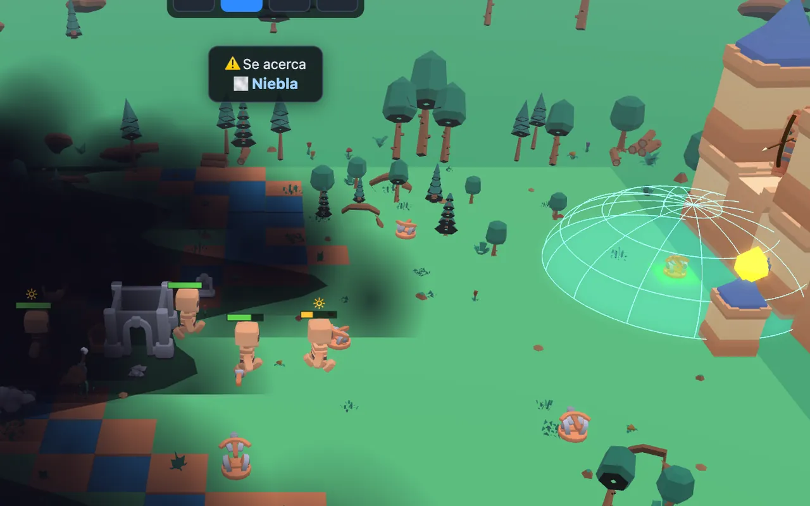
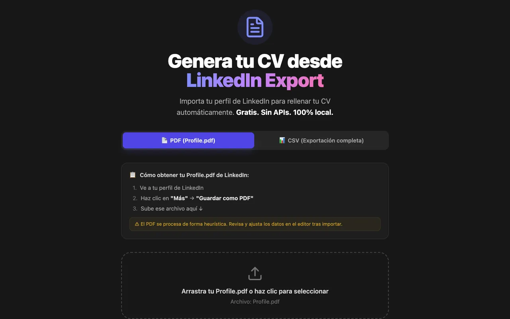
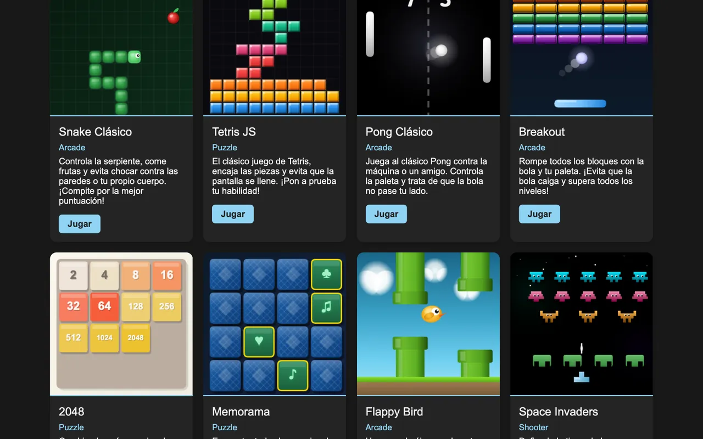
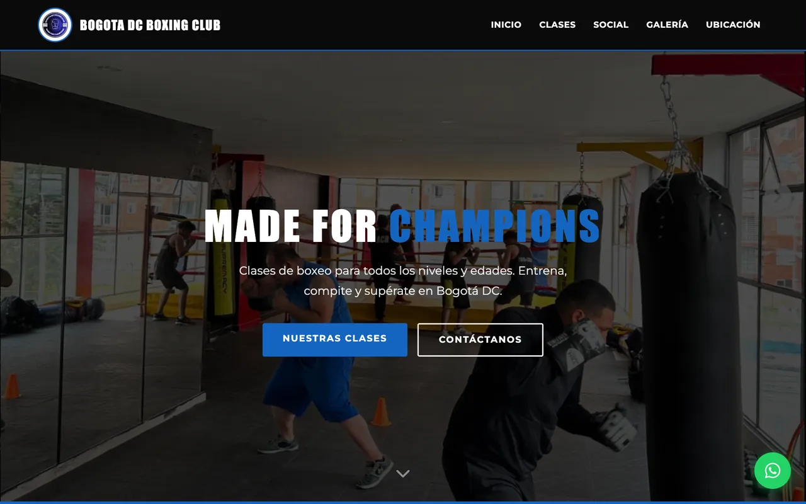

Backend y APIs
Diseño de APIs y de módulos de sistemas centrales: modelado de datos, integraciones y servicios que consumen otros equipos y aplicaciones.
Backend, mobile e IA aplicada, de la arquitectura a producción.
Diez años diseñando APIs, apps nativas e híbridas e infraestructura en la nube. Hoy trabajo en sistemas distribuidos a escala regional y uso la IA en el desarrollo con reglas claras: código mantenible, verificable y seguro.
Diseño de APIs y de módulos de sistemas centrales: modelado de datos, integraciones y servicios que consumen otros equipos y aplicaciones.
Apps nativas iOS, híbridas y multiplataforma, y liderazgo técnico de un equipo de desarrollo móvil.
Interfaces web y SPAs, sin librerías cuando no hacen falta, con el procesamiento en el navegador para que los datos no salgan del dispositivo.
Infraestructura en la nube y pipelines de CI/CD para desplegar seguido, con builds reproducibles y poco riesgo.
Modelos de clasificación que automatizan decisiones de negocio, RAG, fine-tuning y servidores MCP que conectan modelos con herramientas reales.
Juegos jugables en el navegador con WebGL: escenas 3D, partículas, físicas sencillas y controles de teclado, mando y táctil.
Trabajo con agentes de código a diario, pero con reglas. Centralicé las reglas de desarrollo de todos mis proyectos (dependencias, tests, seguridad, git) en un servidor MCP propio que los agentes consultan antes de actuar, y unos hooks bloquean los comandos que las incumplen y proponen el correcto.
Lo que se despliega se genera siempre desde el código fuente, nunca se edita a mano: minificado y con un hash de contenido en el nombre, para que el navegador no sirva nunca una versión vieja.
Commits pequeños, con mensajes que explican el porqué y el diff revisado antes de confirmar. Cada repositorio se replica en dos remotos: GitHub y un servidor Git propio.
Si un dato no necesita salir del dispositivo, no sale. Mis herramientas de imágenes, favicons y CV procesan todo en el navegador, sin servidores ni subidas.

App móvil en React Native: cronómetro de rounds con preparación y descanso, entrenador de voz (TTS) que canta combinaciones, tarjeta de peleador con peso y categoría, y gráficas de progreso. Gratis, sin registros y con los datos solo en tu dispositivo.

Resiste 20 oleadas de 12 tipos de enemigos, cada uno con sus resistencias, que avanzan ocultos en una bruma espesa hasta salir a tu laberinto de torres. Descubre inventos (Arquería, Pólvora, Criogenia…) que desbloquean armas nuevas. 4 mapas, 4 dificultades, clima dinámico y modo infinito.



Boxeo, fútbol, videojuegos, libros, IA y ciberseguridad. El boxeo está detrás de BoxApp y de la web del club; los videojuegos, de los juegos de este portfolio.
¿Un producto en mente, una oportunidad o una duda técnica? Escríbeme y te respondo en menos de 24 horas.